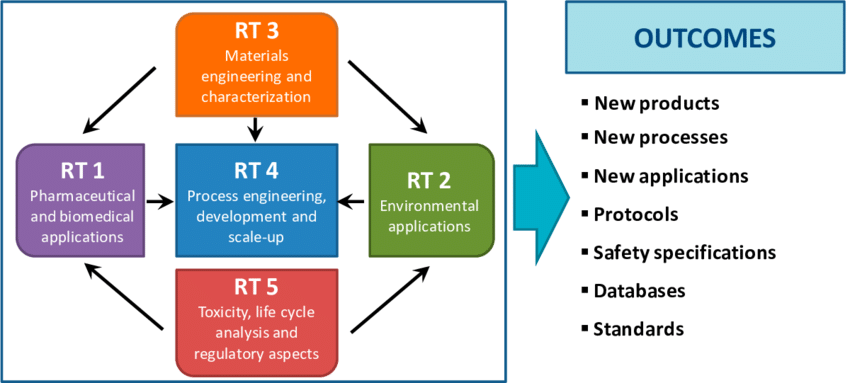

Overall Project Rating
grade
grade
grade
grade
grade
Cohorts for HIV Resistance and Progression in Indian Children and Adults (CoHRPICA) BT/PR21326/MED/29/1158/2016
Cohorts for HIV Resistance and Progression in Indian Children and Adults (CoHRPICA) BT/PR21326/MED/29/1158/2016
Objectives
{{i+1}}. {{message}}
Project Outcomes
{{i+1}}. {{message}}
Physical Progress
{{i+1}}. {{message}}
Has the project any overlaping/connectivity with other project
Select yes or no
Yes
No
Financial overrun if any?
Select yes or no
Yes
No
Schemetic Representation of Project
